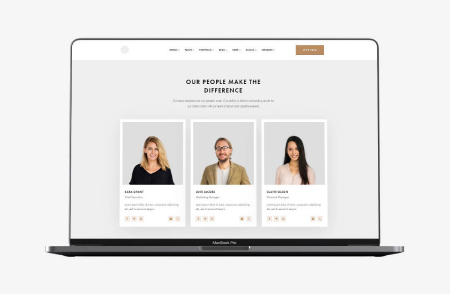
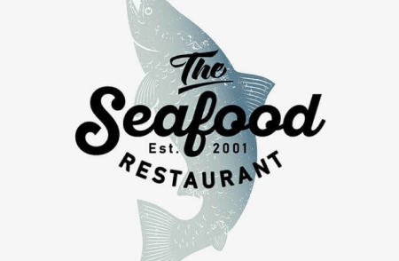
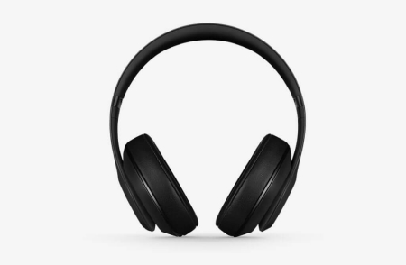
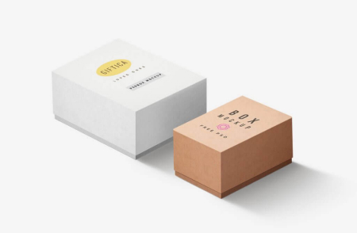
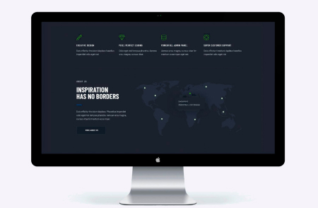
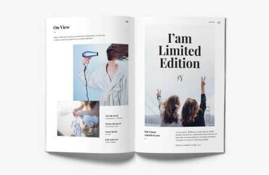
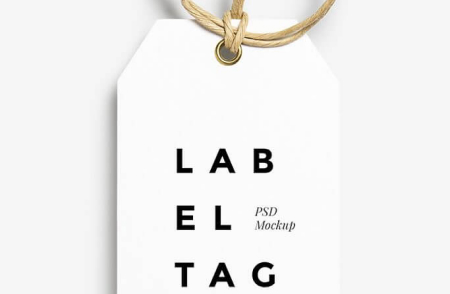

-

TechnocrackStrona internetowa -
Grafika New Orlean vs Golden StarDizajn -

Restauracja SeafoodAplikacja -

Projekt PrimeMarketing -

Projekt BoxesAplikacja -

Inspiration has no BordersStrona internetowa -

Magazyn Limited EditionDizajn -

Projekt LABMarketing -
Growing BusinessAplikacja